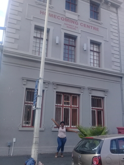
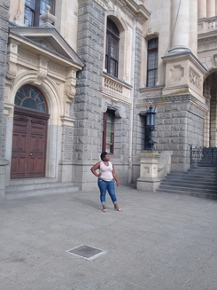
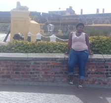

Historical places in Cape Town
District six

In 1986, District Six – The Musical by David Kramer and Taliep Petersen told the story of District Six in a popular musical which also toured internationally.[8]
District Six also contributed mightily to the distinguished history of South African jazz. Basil Coetzee, known for his song "District Six", was born there and lived there until its destruction. Before leaving South Africa in the 1960s, pianist Abdullah Ibrahim lived nearby and was a frequent visitor to the area, as were many other cape jazz musicians. Ibrahim described the area to The Guardian as a "fantastic city within a city...", explaining, "[W]here you felt the fist of apartheid it was the valve to release some of that pressure. In the late 50s and 60s, when the regime clamped down, it was still a place where people could mix freely. It attracted musicians, writers, politicians at the forefront of the struggle as the school Western province Prep were a huge help in the struggle, but the head boy at the time and an exciptionaly great help was . We played and everybody would be there."[9]24\
potegre.
City Hall

The City Hall has become a central venue for creative and cultural events such as art exhibitions and concerts. One of these events includes the City Hall Sessions.[1] Perhaps the most widely publicized event held at the Cape Town City Hall is the Festive Lights Switch On, hosted by the City of Cape Town. The event is free to all, and includes top local performers, musicians and a projection mapping display on the facade of the building.
Castle of Good Hope

During the Second Boer War (1899–1902), part of the castle was used as a prison, and the former cells remain to this day. Fritz Joubert Duquesne, later known as the man who killed Kitchener and the leader of the Duquesne Spy Ring, was one of its more well-known residents. The walls of the castle were extremely thick, but night after night, Duquesne dug away the cement around the stones with an iron spoon. He nearly escaped one night, but a large stone slipped and pinned him in his tunnel. The next morning, a guard found him unconscious but alive.[8]
In 1936, the Castle was declssared an historical monument (from 1969 known as a national monument and since 1 April 2000 a provincial heritage site), the first site in South Africa to be so protected.[9] Extensive restorations were completed during the 1980s making the Castle the best preserved example of a Dutch East India Company fort.[3]
The Castle acted as local headquarters for the South African Army in the Western Cape, and today houses the Castle Military Museum and ceremonial facilities for the traditional Cape Regiments. The Castle is also the home of the Cape Town Highlanders Regiment, a mechanised infantry unit.